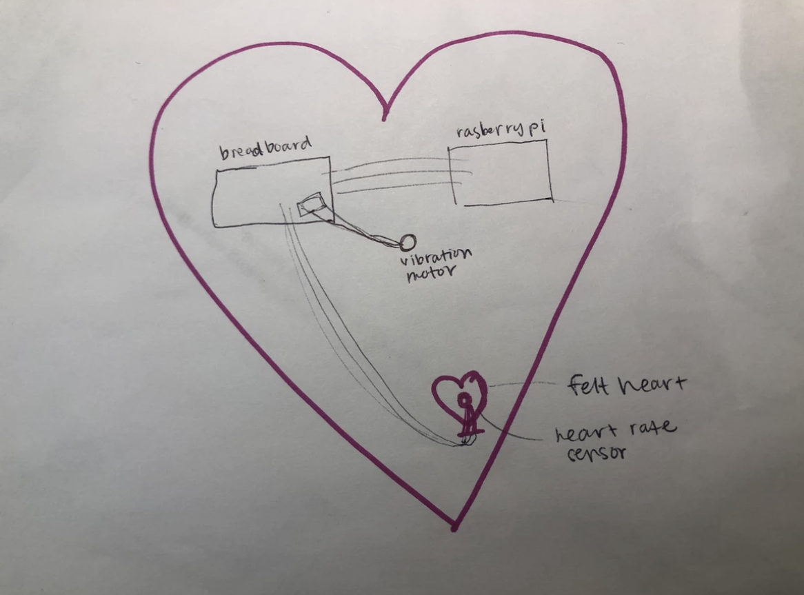
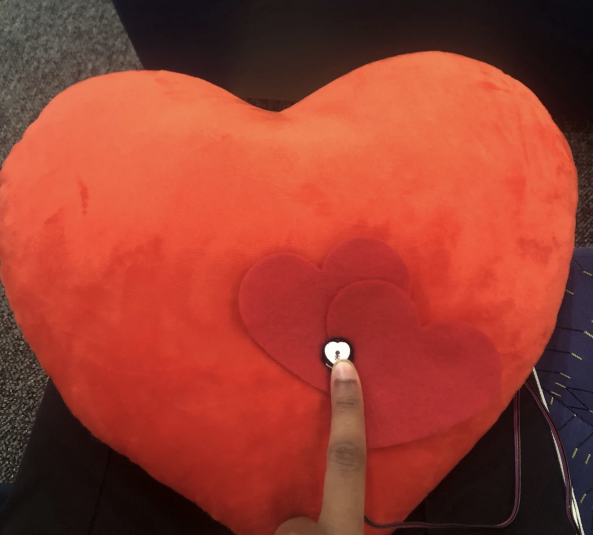
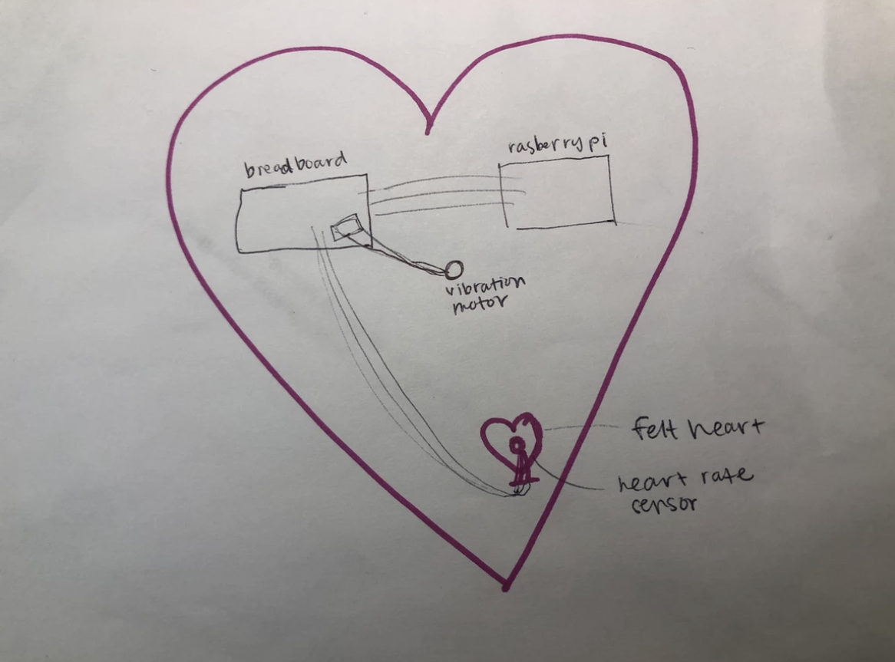
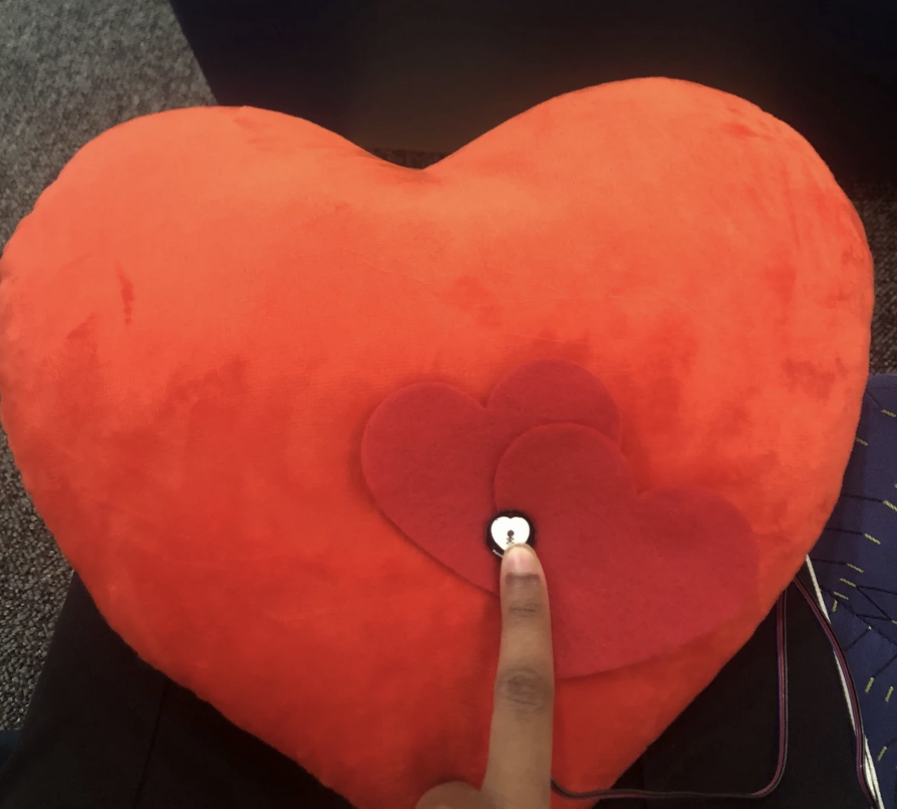

In our first iterations, we struggled to get the heartbeat to feel real. If anything, our vibrations felt like receiving text messages. We decided to purchase a haptic motor controller (Adafruit DRV 2605L) that already has built-in vibration patterns. We found that using a combination of two different vibrations in succession (strong beat followed by a short beat) made the vibrations truly feel like a heartbeat.
The next big challenge was figuring out how to get the two Pis to communicate. Each Pi had to send a heartbeat and receive a heartbeat in realtime. We used sockets to get the Pis to communicate over wifi. One Pi was the server, and the other was the client.
We chose large plush hearts that could be hugged fully. Next, we brainstormed where to place the pulse sensor.
In order to test the best location, we asked several people to hug the heart plushie and realized that a lot of hands were on either end of the heart.
So we decided to place the pulse sensor on the side of the heart, where the right index finger would touch when the heart is hugged.


By using a powerbank as our power source, we were able to go wireless and place all the parts inside the plush heart. Also, it was important to protect our wires, so we created a simple shield made of cardboard.
Through this project, I was able to practice human-centered design to create a solution to a fun, yet serious problem space. In addition, I was able to learn more about systems design with this project as it required communication of a server and client over wifi.